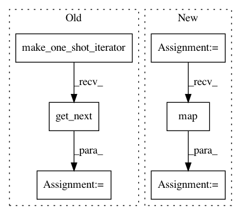

96fad3497a4373cc289f9e7c4272d4722a22f381,src/mjsynth.py,,threaded_input_pipeline,#Any#Any#Any#Any#Any#Any#Any#,80
Before Change
length_threshold,
training, data_tuples))
iterator = dataset.make_one_shot_iterator()
image, width, label, length, text, filename = iterator.get_next()
with tf.device(batch_device): // Create batch queue
image, width, label, length, text, filename = tf.train.batch_join(
After Change
with tf.device(batch_device): // Create batch queue
dataset = dataset.batch(batch_size)
dataset = dataset.map(lambda image,
width, label,
length, text,
filename:
(image, width,
tf.cast(tf.deserialize_many_sparse(label, tf.int64), tf.int32),
length, text, filename))
return dataset
def _element_length_fn(image, width, label, length, text, filename, get_input):
In pattern: SUPERPATTERN
Frequency: 3
Non-data size: 6
Instances
Project Name: weinman/cnn_lstm_ctc_ocr
Commit Name: 96fad3497a4373cc289f9e7c4272d4722a22f381
Time: 2018-06-20
Author: am.lamsal@gmail.com
File Name: src/mjsynth.py
Class Name:
Method Name: threaded_input_pipeline
Project Name: tensorflow/tpu
Commit Name: 9de6656a779e73ac61995bd87044af21b3f37951
Time: 2018-04-19
Author: frankchn@google.com
File Name: models/experimental/amoeba_net/amoeba_net_model.py
Class Name: InputPipeline
Method Name: input_fn
Project Name: tensorflow/tpu
Commit Name: b13e6b6d19ba633e4f55f7ab5910f675d203e38a
Time: 2018-12-03
Author: frankchn@google.com
File Name: models/experimental/inception/inception_v2.py
Class Name: InputPipeline
Method Name: input_fn